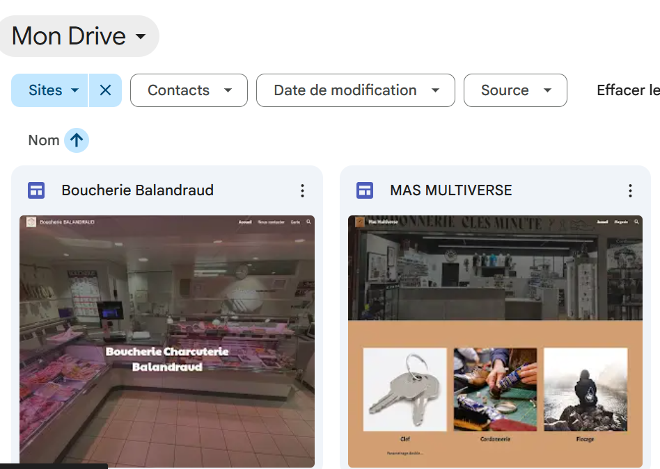

Gestion de la demande

Suite à la réalisation d’un premier projet, j’ai souhaité me lancer dans une nouvelle aventure.
J’ai ainsi développé un site web pour l’entreprise de mon beau-père, la boucherie BALANDRAUD, avant de renouveler l’expérience avec la société le MAS MULTISERVICES.
•Le projet doit respecter les 3 consignes suivantes.
•Si l’on ne respecte pas tout cela, les projets ne sont pas bien tenus.

Voici une vision d’un administrateur qui peut gérer son site de manière assez simple.

Contexte :
Dans un contexte de développement de la présence numérique des petites entreprises, il est devenu essentiel de disposer d’un site web clair et accessible. Le besoin principal était de créer des sites vitrines simples et efficaces, permettant de présenter l’activité, les services et les coordonnées des entreprises.
L’environnement technique utilisé repose sur des outils accessibles, ne nécessitant pas de compétences avancées en programmation. Les contraintes rencontrées concernaient principalement la créativité dans la conception des sites, le respect de l’identité visuelle de chaque entreprise, ainsi que la diversité des goûts en matière de design. Il a également fallu tenir compte des contraintes de temps et de la simplicité des solutions mises en place.
Objectifs :
L’objectif principal était de concevoir des sites vitrines professionnels destinés à de petites entreprises, afin d’améliorer leur visibilité en ligne. Les sites devaient être :
accessibles à tous les utilisateurs,
simples à naviguer,
adaptés à une consultation sur ordinateur et mobile,
clairs dans la présentation des informations.
La finalité du projet était de fournir un outil de communication efficace, permettant aux entreprises de se faire connaître et d’être facilement contactées par leurs clients.
Une méthodologie de travail organisée a été mise en place, comprenant :
l’analyse des besoins du client,
la définition de la structure du site,
La création des pages :
la mise en forme du contenu.
la vérification du bon fonctionnement du site
Un calendrier de travail a permis de planifier les différentes étapes et de respecter les délais fixés.
Outils et technologies utilisés :
Ordinateur
Google Sites
Navigateur web
Outils de recherche pour le contenu et l’inspiration graphique
Compétences mobilisées :
compétences techniques liées à la création de sites web,
capacité à structurer un contenu numérique,
savoir-faire en communication visuelle,
savoir-être professionnel,
capacité d’écoute et d’analyse de la demande du client,
autonomie et organisation du travail.
Résultats obtenus :
Les sites web réalisés constituent les livrables finaux du projet. Ils répondent aux objectifs fixés et présentent une interface claire et fonctionnelle.
Voir ci-dessus
Bilan personnel :
La principale difficulté rencontrée a été la gestion du temps, notamment pour structurer correctement chaque projet tout en respectant les délais. Pour y remédier, j’ai appris à mieux planifier mon travail, à découper les tâches et à prioriser les actions importantes.
Ce projet m’a permis de développer mes compétences en création de sites web, d’améliorer mon sens de l’organisation et de renforcer ma capacité à travailler de manière autonome. Il m’a également appris l’importance de la préparation et de la présentation professionnelle d’un projet numérique.
Présentation
Vous souhaitez effectuer vos premiers pas avec l'hyperviseur Proxmox VE ? Vous êtes au bon endroit. Dans ce tutoriel, nous allons voir comment installer Proxmox VE et comment créer une première machine virtuelle.
Bien débuter avec Proxmox VE : la virtualisation open source
Cliquez ici pour regarder la vidéo sur YouTube
Propulsé sur le devant de la scène suite aux changements de stratégies chez VMware, Proxmox VE (Virtual Environment) est un hyperviseur open-source conçu pour l'exécution de machines virtuelles (VM) et de conteneurs. Basé sur Linux, et plus particulièrement la distribution Debian, Proxmox VE s'appuie sur deux technologies : Kernel-based Virtual Machine (KVM) pour la virtualisation complète et LXC (Linux Containers) pour les conteneurs.
Le projet Proxmox VE a débuté en 2007, en Autriche, et sa première version stable a été lancée en 2008. Depuis, il est régulièrement mis à jour et les nouvelles versions apportent des fonctionnalités. À l'heure où cet article est écrit, la version la plus récente est la suivante : Proxmox VE 8.4.1, basée sur Debian 12 et disponible depuis le 9 avril 2025.
Proxmox VE met à disposition des administrateurs une interface de gestion web qui permet de gérer l'ensemble de votre infrastructure de virtualisation. Une interface en ligne de commande est également accessible, ainsi qu'une API REST. Il peut fonctionner seul, c'est-à-dire dans une architecture avec un seul nœud, ou au sein d'un cluster avec plusieurs nœuds pour assurer la haute disponibilité des ressources. À ce sujet, il est important de savoir qu'il adopte une approche multi-maître, donc n'importe quel nœud du cluster peut effectuer toutes les tâches de gestion.
Bien qu'il nécessite un temps de prise en main pour en comprendre tous les rouages, Proxmox VE est extrêmement flexible. Si nous prenons l'exemple du stockage, il prend en charge les espaces de stockage locaux, le stockage en réseau (SAN/NAS), et les solutions de stockage distribué comme Ceph.
Preuve que le projet Proxmox au sens large continue de s'étoffer, une solution de sauvegarde et restauration nommée Proxmox Backup Server a été lancée le 11 novembre 2020. Aujourd'hui, celle que l'on surnomme PBS et qui est codée en Rust représente une solution fiable et pérenne pour sauvegarder les environnements Proxmox VE.
Dans cet article d'introduction, nous commencerons par la base avec la réalisation des actions suivantes :
Création de la clé USB bootable
Installation de base de Proxmox VE 8.4
Mise à jour des paquets
Importation d'une image ISO
Création d'une première machine virtuelle
Créer un utilisateur dédié pour un premier aperçu dans la gestion des permissions
Ici, nous allons installer Proxmox VE à partir de l'image ISO officielle de Proxmox VE. Une alternative consiste à installer une machine Debian et à installer les paquets nécessaires pour en faire un hôte Proxmox VE (paquets : proxmox-default-kernel, proxmox-ve, etc.).
D'autres articles seront publiés pour vous permettre d'exploiter pleinement Proxmox VE et de vous former sur cette solution.
Note : Proxmox VE 9.0 est disponible en version bêta depuis le 18 juillet 2025. Cette nouvelle version est basée sur Debian 13 Trixie, la prochaine version majeure de Debian qui sera disponible le 9 août prochain.
II. Prérequis pour l'installation de Proxmox
A. Les prérequis matériel
Avant d'envisager l'installation de Proxmox VE 8.4, il est important de s'assurer que votre système respecte les prérequis matériels. Voici les points clés à considérer pour les prérequis :
Processeur (CPU)
Un CPU 64 bits (Intel 64 ou AMD64) est nécessaire, avec au moins 2 coeurs.
Pour bénéficier de la virtualisation complète KVM, le CPU et la carte mère doivent prendre en charge la virtualisation (Intel VT ou AMD-V).
Si vous prévoyez d'utiliser la fonctionnalité de PCI(e) passthrough (permettant aux machines virtuelles d'accéder directement à des périphériques physiques comme des cartes graphiques ou réseau), le CPU doit supporter impérativement les technologies VT-d ou AMD-d.
Mémoire vive (RAM)
Un minimum de 1 Go de RAM, mais 2 Go de RAM sont recommandés. Ceci uniquement pour le système d'exploitation et les services Proxmox VE eux-mêmes.
Il faut prévoir de la mémoire supplémentaire dédiée aux machines virtuelles.
Cartes réseau
Une interface réseau au minimum pour assurer la connectivité de l'hôte Proxmox
Des cartes réseau Gigabit redondantes sont recommandées pour la production.
Pour les déploiements Ceph, une bande passante réseau d'au moins 10 Gbit/s, ou plus, est recommandée pour la production et elle devrait être utilisée exclusivement pour le trafic Ceph.
Stockage
Le choix de l'emplacement du stockage et la volumétrie dépendent avant tout de vos besoins.
Proxmox VE prend en charge divers types de stockage : stockage local, SAN, NAS, et des solutions de stockage distribué comme Ceph RBD.
Lors de l'installation, vous pourrez choisir le système de fichiers parmi ext4, XFS, BTRFS ou ZFS.
Secure Boot
Depuis Proxmox VE 8.1, Secure Boot est pris en charge nativement et fonctionne "out of the box". Sinon, vous devez le désactiver dans les paramètres du BIOS de votre machine.
Il s'agit d'indications à prendre en considération, mais en aucun cas d'une configuration type. Chaque projet est différent.
B. Création de la clé USB bootable
Dans un premier temps, il sera nécessaire de récupérer le média d'installation (ISO) pour créer une clé USB bootable afin d'installer Proxmox sur notre serveur. La clé doit avoir au moins 1 Go de stockage disponible. Pour Windows, des outils comme balenaEtcher ou Rufus (en mode DD) sont recommandés. Ici, nous utiliserons Rufus, simplement par habitude. Si vous utilisez une machine Linux pour créer la clé USB bootable, vous pouvez utiliser la commande dd (voir ci-dessous).
La méthode la plus sécurisée pour se procurer les sources d'installation, c'est de se rendre directement sur le site de l’éditeur.
Télécharger Proxmox VE
Cliquez sur le bouton "Download" au niveau de la section "Proxmox VE 8.4 ISO Installer" pour télécharger l'ISO.
Attention : la clé USB sera formatée alors, pensez à sauvegarder vos données.
Ensuite, créez la clé USB bootable avec un utilitaire. Je vous recommande d'utiliser Rufus : il suffira de sélectionner votre clé USB et le fichier ISO. Vous pouvez le télécharger via ce lien :
Télécharger Rufus
Sélectionnez l'image ISO et votre clé USB. Un message d'avertissement "Image ISOHybrid détectée" va s'afficher, vous pouvez cliquer sur "OK". La clé USB bootable sera créée sans problème. Cliquez sur "Démarrer" pour lancer la création de la clé.
Quand Rufus affiche le statut "Prêt", considérez la clé comme prête à l'emploi.
Si vous souhaitez créer une clé USB bootable sous Linux, sans utiliser un outil comme Rufus, vous pouvez exécuter la commande dd :
sudo dd bs=1M conv=fdatasync status=progress if=./proxmox-ve_*.iso of=/dev/sdc
La commande ci-dessus suppose que l'image ISO se nomme proxmox-ve_
Vous n'avez plus qu'à connecter la clé USB bootable à votre serveur.
C. Configuration du BIOS/UEFI
Sur votre serveur, certaines modifications vont devoir être apportées à la configuration de votre BIOS ou UEFI (pour les configurations ayant des versions de firmware plus récent).
Recherchez sur le site constructeur ou fabricant de la carte mère, la touche permettant d’accéder à votre BIOS/UEFI. Les touches les plus courantes pour accéder au BIOS/UEFI sont : F2, F8, F10, Delete, Esc.
Mais aussi, dans certains cas, la combinaison de touches peut être : Ctrl + Alt + Esc ou Ctrl + Alt + Delete, bien que celles-ci soient plus courantes sur les anciennes machines. Notez également qu'une touche comme F10 peut lancer autre chose : le menu de démarrage (Boot menu).
Comme je le disais, afin de permettre la virtualisation, il est nécessaire d’activer des fonctionnalités telles que la technologie de virtualisation, appelée :
VT-x ou Virtualization Technology chez Intel
AMD-V ou SVM ou Secure Virtual Machine Mode chez AMD
Ensuite, il sera nécessaire de modifier les options du sélecteur d’amorçage (Boot), en indiquant l’ordre d’amorçage et en mettant la clé USB en 1ère position. Ce périphérique d'amorce doit être positionné avant le disque de la machine. L'alternative consiste à passer par le Boot Menu pour démarrer sur la clé USB une seule fois (ceci évite d'altérer la configuration du BIOS).
Si vous désirez modifier l'ordre de démarrage, suivez ce qui suit. L'objectif est de venir positionner notre clé USB sur la ligne "1st Boot Device". Elle correspond à l'entrée "Removable Device", mais dans certains cas, vous pouvez avoir le nom de la clé USB qui s'affiche.
Quand c'est fait, sauvegardez et quittez.
La machine va redémarrer et elle devrait lancer la clé USB : le processus d'installation de Proxmox va pouvoir commencer.
III. Installation de Proxmox VE 8.4
Voilà, l'interface de Proxmox s'affiche ! Nous allons procéder à l'installation. Sélectionnez l'option nommée "Install Proxmox VE (Graphical)" dans la liste. L'option "Install Proxmox VE (Terminal UI)" permet aussi de faire l'installation, à partir d'une interface plus austère, en mode console.
Vous verrez aussi l'apparition de la console. L'occasion de voir que le serveur Proxmox cherchera à récupérer une adresse IP automatiquement s'il est connecté au réseau.
Acceptez le contrat de licence utilisateur et poursuivez.
Sélectionnez le disque qui accueillera le système. Dans cet exemple et pour la mise en route, nous partons du principe que la machine dispose d'un seul disque. Vous pouvez personnaliser le stockage, notamment choisir le système de fichiers, en cliquant sur le bouton "Options". Par défaut, Proxmox VE s'appuiera sur LVM avec le système de fichiers EXT4. Ici, vous pourriez opter plutôt sur ZFS ou Btrfs pour bénéficier de fonctionnalités avancées, mais c'est aussi plus gourmand en RAM.
À l'étape suivante, vous devez sélectionner votre pays, le fuseau horaire et la disposition du clavier.
La prochaine étape consiste à définir un mot de passe pour l'administrateur de la plateforme, associé au super-utilisateur root. Il est également nécessaire et obligatoire de spécifier une adresse e-mail valide. Ce mot de passe doit être robuste, car il donne un accès complet à votre Proxmox.
La suite de la configuration concerne le réseau et plus particulièrement l'interface d'administration de Proxmox.
1 - Les interfaces réseau "actives" sur votre machine sont affichées, vous permettant de sélectionner celle à configurer et à affecter en tant qu'interface de management.
2 - Spécifiez le nom FQDN de votre serveur, c'est-à-dire son nom complet : nom d'hôte + nom de domaine.
3 - Désormais, vous devez configurer l'adresse IP de votre interface d'administration. Si le serveur a récupéré une adresse IP via DHCP, celle-ci est automatiquement inscrite.
Voici ce que j'obtiens de mon côté :
I. Présentation
Dans ce tutoriel, nous allons apprendre à créer un domaine Active Directory sous Windows Server, en partant de zéro.
Cette procédure est réalisée sous Windows Server 2016, mais vous pouvez l'appliquer sur les versions plus récentes : Windows Server 2019 et Windows Server 2022.
Nous pourrions même dire qu'elle s'applique à des versions plus anciennes telles que Windows Server 2012 R2.
Pour bien appréhender le principe de l'Active Directory, vous pouvez consulter ce cours :
Cours - Les notions de base de l'Active Directory
En complément, voici ce tutoriel au format vidéo, en français, avec Windows Server 2019 :
Windows Server 2025 - ADCS - Configurer le LDAPS pour Active Directory
Watch on
Video channel logo
Avant de commencer, veillez à effectuer ces différentes actions sur votre serveur :
Définir un nom d'hôte sur le serveur
Définir une adresse IP statique (configuration réseau manuelle)
Effectuer les dernières mises à jour Windows
Définissez un mot de passe complexe pour le compte Administrateur de votre serveur (ce sera votre futur compte Administrateur du domaine)
Si besoin, vous pouvez télécharger une image ISO de Windows Server via cette page :
Télécharger Windows Server 2022
II. Créer un domaine Active Directory
A. Installer le rôle ADDS
La première étape étape, avant de créer le domaine Active Directory, consiste à installer le rôle "ADDS" : Active Directory Domain Services.
Il s'agit du rôle permettant de créer un domaine Active Directory.
Ouvrez le Gestionnaire de serveur, puis cliquez sur "Gérer" puis "Ajouter des rôles et fonctionnalités".
Passez l'étape "Avant de commencer" et poursuivez ensuite en laissant le type d'installation sur le choix "Installation basée sur un rôle ou une fonctionnalité".
Sélectionnez votre serveur local.
En principe, c'est le choix par défaut.
L'étape cruciale de l'installation du rôle est ici, puisqu'il va falloir cocher "Services AD DS" dans la liste.
Une second fenêtre va apparaître pour vous proposer d'installer les outils de gestion : validez.
Qui dit outils de gestion, dit console d'administration comme "Utilisateurs et ordinateurs Active Directory" mais aussi le module PowerShell pour Active Directory.
Nous n'installons pas de fonctionnalités en plus, donc poursuivez sans rien sélectionner.
Lisez les messages indiqués à l'étape "AD DS".
Microsoft en propose pour évoquer la synchronisation Active Directory avec Microsoft Entra ID (Azure Active Directory), son penchant dans le Cloud Microsoft.
Cliquez sur "Installer" pour démarrer l'installation, qui peut prendre quelques minutes.
Cliquez sur "Fermer" quand ce sera terminé et nous allons passer à la suite de la configuration.
B. Créer le domaine Active Directory
Depuis Windows Server 2012, la fameuse commande "dcpromo" n'existe plus et laisse place à un message dans le gestionnaire de serveur qui permet de promouvoir le serveur en tant que contrôleur de domaine. Comme ceci :
Comme il s'agit d'un nouveau domaine dans une nouvelle forêt, choisissez "Ajouter une nouvelle forêt" et indiquez le nom de domaine. Si vous utilisez un nom de domaine tel que "it-connect.local" sachez qu'il ne sera pas routable, ce qui peut poser problèmes pour l'utilisation de certains services. En disant cela, je notamment à Azure AD Connect pour synchroniser son Active Directory local avec Microsoft 365, mais il existe des solutions (un alias sur le suffixe UPN, par exemple).
installer-adds-windows-server-2016-10
Pour le niveau fonctionnel de la forêt et du domaine, indiquez "Windows Server 2016" mais ceci implique que vos contrôleurs de domaine devront exécuter obligatoirement Windows Server 2016 ou une version future. A ce jour, "Windows Server 2016" est la valeur la plus élevée disponible, mais ceci va évoluer avec la sortie de Windows Server 2025.
Définissez-le aussi comme serveur DNS et Catalogue global. Enfin, indiquez un mot de passe pour les services de restauration de l'annuaire (ce mot de passe ne correspond pas au mot de passe Administrateur de votre futur domaine !).
Comme il s'agit d'un nouveau serveur DNS pour une nouvelle zone, ne vous inquiétez pas pour ce message, vous pouvez poursuivre.
Indiquez un nom NETBIOS pour le domaine, à savoir un nom court et qui ne s'appuie pas sur DNS pour être résolu.
Laissez les chemins par défaut et poursuivez.
Vérifiez les options et continuez.
Finissez en cliquant sur installer pour démarrer la création de votre domaine et la configuration du DC.
Patientez pendant l'installation. Quand ce sera terminé, le serveur va obligatoirement redémarrer, de façon automatique.
Dès lors que l'installation est terminée et que votre serveur a redémarré, vous pouvez commencer à utiliser votre domaine Active Directory, notamment avec les consoles "Utilisateurs et ordinateurs Active Directory" et "Centre d'administration Active Directory" qui servent à gérer les objets dans l'annuaire (utilisateurs, ordinateurs, serveurs, etc.).
installer-adds-windows-server-2016-17
III. Conclusion
Vous venez de créer un domaine Active Directory ! Il ne reste plus qu'à créer vos premiers utilisateurs, ajouter vos premiers ordinateurs, et éventuellement créer vos premières stratégies de groupe. Pour la production, veillez à utiliser au moins deux contrôleurs de domaine Active Directory.